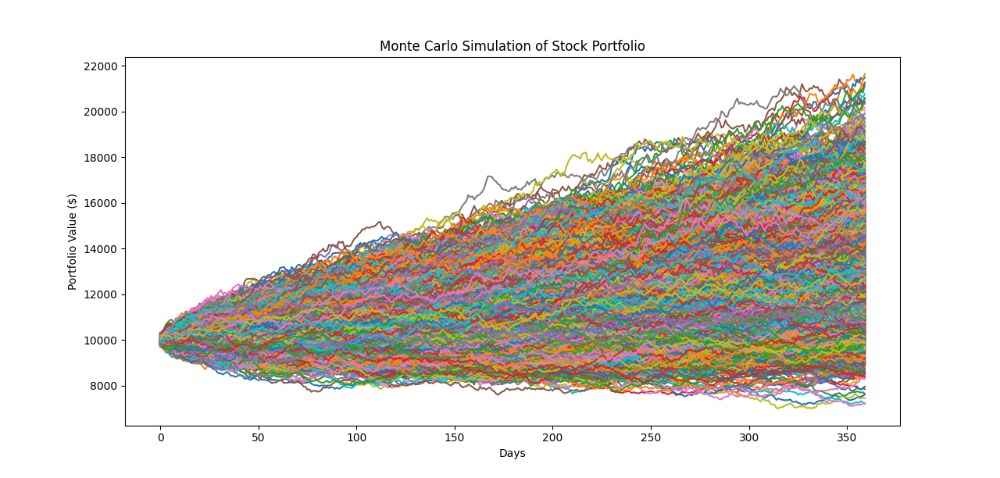
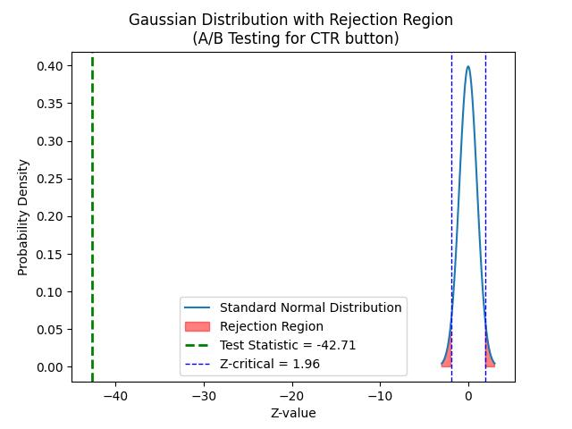
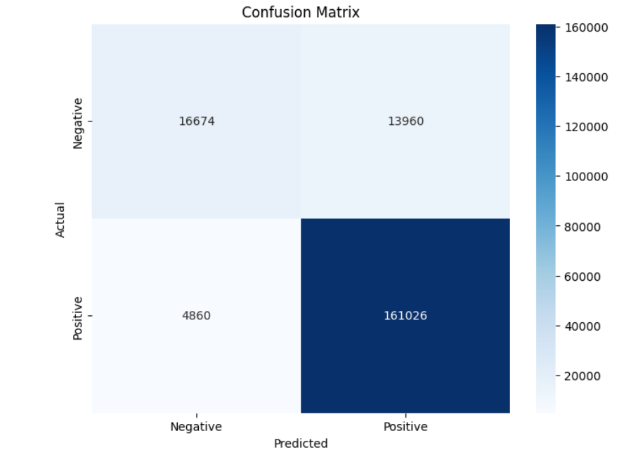
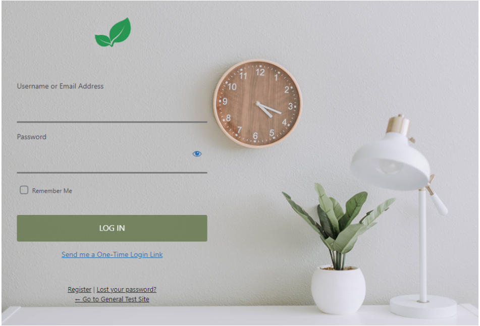
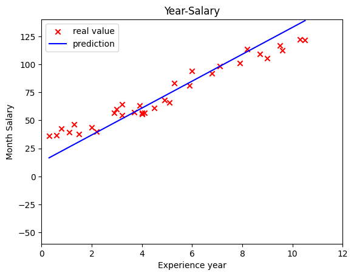
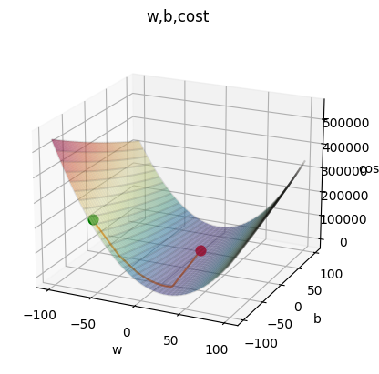
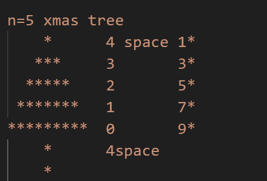
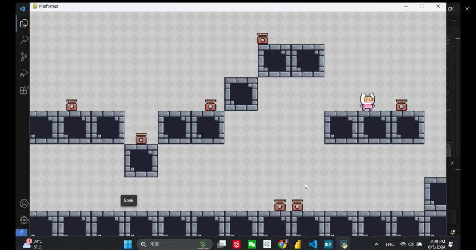

Conduct the simulations on AU top 10 stocks. *Data not in marketcap-order from Yahoo Finance latest.
["CBA","BHP","TLS","NAB","WBC","STO","CSL","ANZ","FMG","WES"]
Number of Simulations =10000 times
Conduct time frame =360 days


Using pandas, seaborn, matplotlib, numpy to creat an interesting python correlation analysis. Interesting to see but surprise budget and votes have the highest correlation to movie gross earnings.Using pandas, seaborn, matplotlib, numpy to creat an interesting python correlation analysis. Interesting to see but surprise budget and votes have the highest correlation to movie gross earnings.
Skills: Seaborn · Python (Programming Language) · NumPy · Pandas (Software) · Matplotlib

Undergo hypothesis testing using Python. A/B Testing project on a new user interface button on entry webpage. The result is statistically significance. Hence we reject null hypothesis, means that the experimental group is statistical significance having positive effect in CTR ( Click-Through-Rate.)Undergo hypothesis testing using Python. A/B Testing project on a new user interface button on entry webpage. The result is statistically significance. Hence we reject null hypothesis, means that the experimental group is statistical significance having positive effect in CTR ( Click-Through-Rate.)
Skills: Pycharm · A/B Testing · Statistical Data Analysis

The project successfully developed a machine learning model that predicts the sentiment of Amazon Kindle reviews with high accuracy and precision. The steps taken ensured that the data was well-prepared and that the model was appropriately evaluated, providing reliable results for potential deployment in analyzing customer feedback.
This documentation provides a clear and concise overview of the project, including the rationale behind each step and the final outcomes.The project successfully developed a machine learning model that predicts the sentiment of Amazon Kindle reviews with high accuracy and precision. The steps taken ensured that the data was well-prepared and that the model was appropriately evaluated, providing reliable results for potential deployment in analyzing customer feedback. This documentation provides a clear and concise overview of the project, including the rationale behind each step and the final outcomes.
Skills: Python (Programming Language) · Machine Learning · confusion matrix

Interesting Data Visualization topcis. Check it out.

Conduct Exploratory Data Analysis using MS SQL. Project includes:
Remove Duplicates, Standardize data, Data Cleaning and Exploratory Analysis.

Create Membership login System using Python Flask connect to MongoDB.

Using gradient descent method to predict the employee salary using years of working experience as independent variable.

Perdict the employee salary using MultiLinear regression model using years of working experience, Education level and city as independent variables. Construct Gradient Descent Method to calculate the optimal point.

Some useful and practical Python syntax for beginners. Just for FUN!

Using Python Pygame to create a platform game Running man. Define the player movement, object setting, collision, jump, gravity and so on. Feel free to try it out if you have the console. Cheers!Using Python Pygame to create a platform game Running man. Define the player movement, object setting, collision, jump, gravity and so on. Feel free to try it out if you have the console. Cheers!
Skills: Python (Programming Language) · Pygame · Pygbag